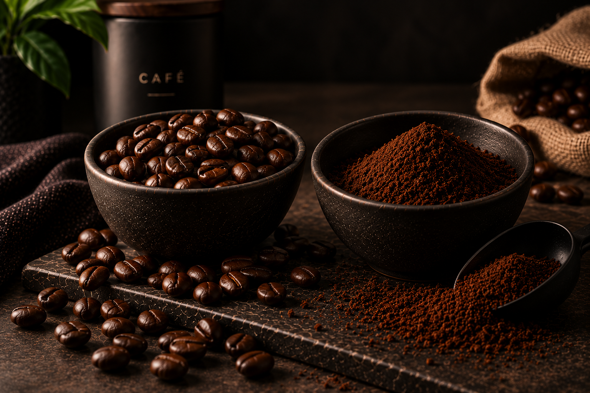
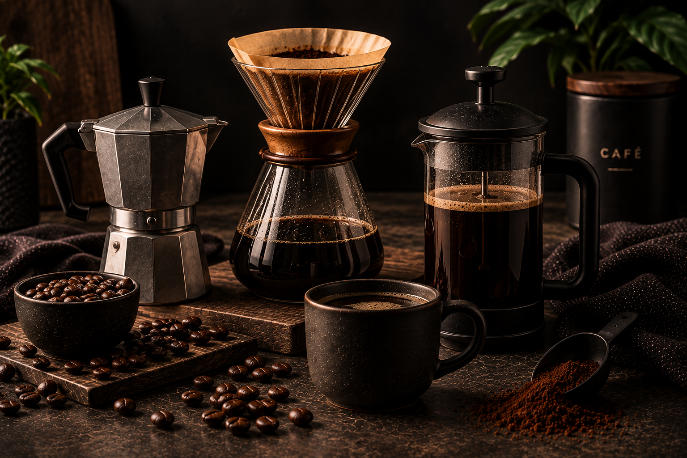

Cómo preparar café con prensa francesa
Conoce los pasos básicos para preparar un café con cuerpo y aroma utilizando una prensa francesa.
Leer artículoAprende sobre café, métodos de preparación y diferentes formas de disfrutar cada taza.
Conoce los pasos básicos para preparar un café con cuerpo y aroma utilizando una prensa francesa.
Leer artículo
Descubre las diferencias entre comprar café en grano y café molido y cuál puede ser mejor para tu forma de preparar café.
Leer artículo
Prensa francesa, moka o V60: conoce algunas características de cada método.
Leer artículo